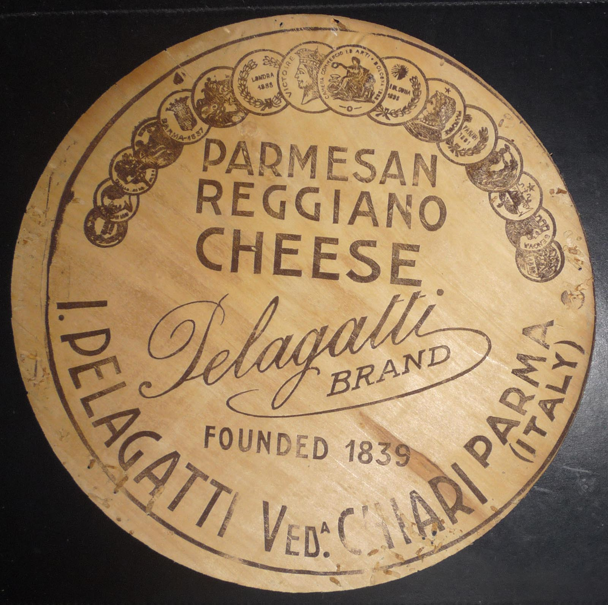
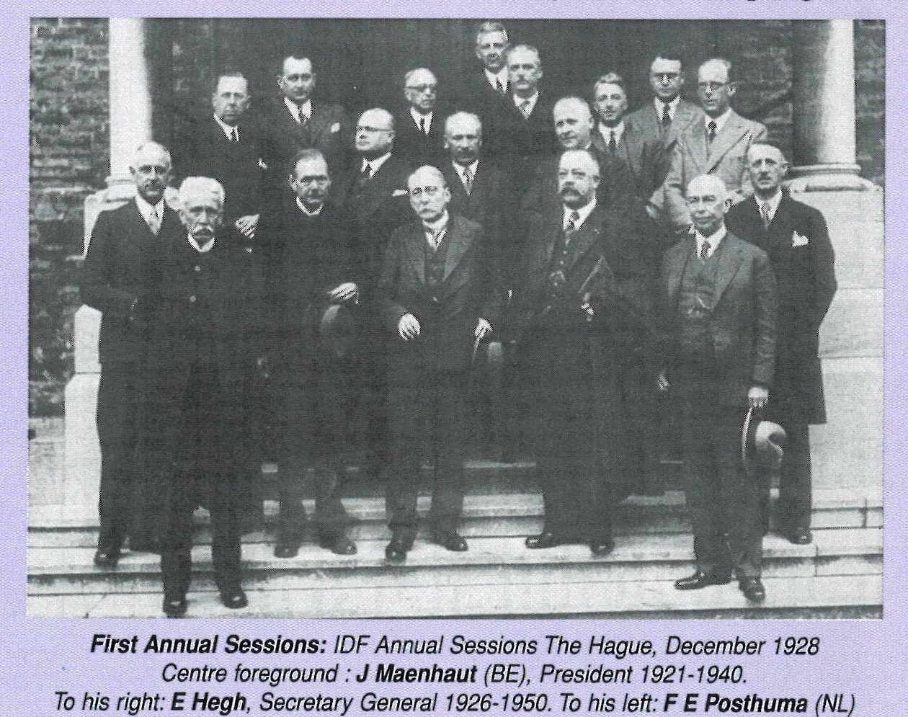
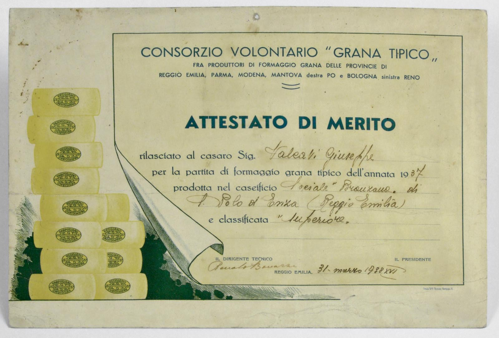
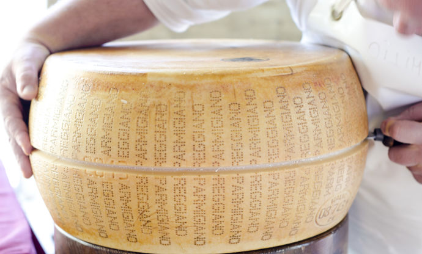

1901
In 1901, the Chamber of Commerce of Reggio Emilia proposed to establish a trade union between producers and traders of cheese to authenticate the origin of the product to be exported.
In 1901, the Chamber of Commerce of Reggio Emilia proposed to establish a trade union between producers and traders of cheese to authenticate the origin of the product to be exported.
In an attempt to solve this delicate problem, the representatives of the Chambers of Commerce of Parma, Reggio Emilia, Modena and Mantua met in 1909 to reach a joint solution for the possible marking of the hard cheese produced in these four provinces. It was discussed whether the name should be Parmigiano or Reggiano, but the meeting ended without any outcomes.
After the meeting, the Chamber of Commerce of Parma drew up a Regulation for the Marking of Parmigiano Cheese, which envisaged the application of a mark showing a shield with the initials F.P. (Formaggio Parmigiano, i.e. Parmigiano Cheese) surmounted by the Ducal crown. For its own concern, the Chamber of Commerce of Reggio Emilia prepared a special mark for the cheese manufactured in its province, the mark consisted of the initials G.R.R.E. (Grana reggiano di Reggio Emilia, i.e. Reggiano Hard Cheese from Reggio Emilia). The procedure for the implementation of these proposals, however, turned out to be slower than expected not only for the interests at stake, but also for the problems arising from the World War. After the war, the problem of competition is also heightened because a South-American imitation, Reggianito from Argentina, appeared on the market.
The problem of designations of origin did not solely affect Parmigiano-Reggiano, in fact other types of traditional cheese that had to deal with a market having totally new characteristics were also affected.
In 1926, upon suggestion by France and Italy, the VII Dairy International Congress dealt with the issue of the definition of "the names of the types of cheese derived from their areas of origin" to prevent frauds towards buyers.
Time was almost ripe and in 1928, based on the proposal made by the Association of Entrepreneurs and the Provincial Council for Corporate Economics (Chamber of Commerce) of Reggio Emilia, the voluntary Consortium for the protection of the Grana Reggiano (Reggiano Hard Cheese) was established.
The representatives from the dairies of Parma, Reggio, Modena and Mantua (right of the River Po), agree on the need to approve a mark of origin for their cheese. Thus, on July 27th, 1934, the Consorzio Interprovinciale Volontario Grana Tipico was born, adopting the oval mark for compliant wheels. The trademark bore the vintage and the written “C.G.T. Parmigiano Reggiano”.
The dotted inscriptions around wheels (introduced in 1964).
After receiving the official legal approvals, the Consortium, whose denomination is "Consorzio del Formaggio Parmigiano-Reggiano", was joined by all manufacturers and carried on with renovated vigour its protection activity that still characterises it today. The Consortium's tasks were (and are): the defence and protection of the Designation of Origin, the facilitation of trade and consumption by promoting every initiative aimed at safeguarding the typicality and unique features of the product.
One of the most important measures adopted by the Consortium with the aim of protecting the product sales was that of introducing in 1964 the mark of origin of the dotted inscription "Parmigiano-Reggiano" encircling the wheels, thereby conferring to the cheese its current external appearance.
